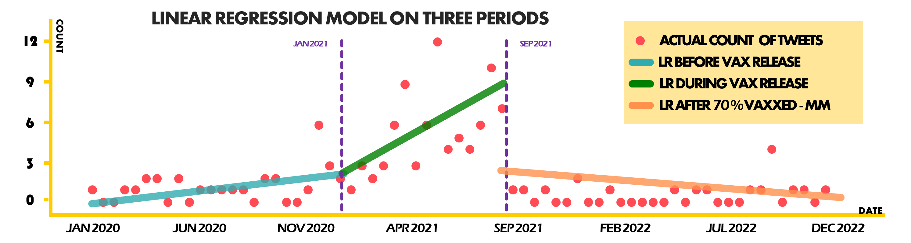

Synthesizing the findings of our project.
Finally, the team synthesizes the findings of COVID Implants, an initiative to study the misinformation about COVID-19 in the Twitter space. In the synthesis section, we revisit some sections of the project's data exploration and data modeling that relates to the research questions and the hypotheses brought up in the problem section. In particular, we address them using an appropriate analysis corresponding to each problem.
The synthesis section provides Results and Discussion, Implications, and Conclusion. Here, we show the main takeaways, the potential impact, and practical applications of the project. At the end of this section, we also provided a poster, which is more concise and more straightforward, with an intent to quickly and clearly present some complex findings of our study to the general audience.
Results and Discussion
Through data exploration and modeling, the researchers have come up with the following results and findings. The results and discussion are organized in three topics aligning our research questions: Natural Language Processing, Regression on Time Series, and Categorical Data Encoding.
Natural Language Processing
This section wants to answer the question: "Which implant is most frequently mentioned in tweets?" Five implant types were identified, namely "Magnet", "Microchip", "Water", "Toxin", and "Others". This is represented using a Feature Comparison on a bar graph. Subsequently, it was found that "Microchip" is the most mentioned implant with 85 tweet counts. Based on the natural language processing technique, our hypothesis for the first research question is rejected. Instead, microchip is the most frequently mentioned implant, while magnet is second.
Figure 1: Feature Comparison on Count and Implants
Regression on Time Series Data
This section wants to answer the question: "When were tweets about implants in COVID-19 vaccines prevalent?" To obtain this, data modeling via Linear Regression is performed on three time periods, namely, before the release of the COVID-19 vaccine, during the release of the vaccine, and after the population of Metro Manila obtained a vaccine rate of 70%. Through Linear Regression, it can be established that there is a significant relationship, p=0.03, between the event of COVID-19 vaccine release and tweet counts. There is no significant relationship, p>0.05, between other events and tweet counts. From the regression test, our hypothesis for the second hypothesis is accepted. The release of the COVID-19 vaccine triggered a surge of tweets. The other events outside the COVID-19 vaccine release had no significant effect on the change in the spread of tweets.
Figure 2: Linear Regression Model of three Predictors over a Scatter Plot of Actual Data
Categorical Data Encoding
This section wants to answer the question: "Is there a difference in content type between Filipino and Foreign tweets?" To answer this, One Hot Encoding and Content-Language Correlation was done to visualize Feature Correlation of Filipino or Foreign tweets to content types. From this, it was found that there was a moderate positive correlation [>0.3] on the content type "Emotional Type" and Filipino tweets. Furthermore, it was also found that there was a moderate positive correlation [>0.3] between the content type "Rational Type" and Foreign Tweets. Alternatively, the Transactional content type has a weak correlation [<0.1]. Based on the correlation test, our hypothesis for the third research question is accepted. It was found that Filipino tweets tend to be more emotional, while Foreign tweets tend to be more rational.
Figure 3: Feature Correlation on Content and Language
Implications
From this research, it becomes clear that public health information, specifically relating to COVID-19 and vaccines, should be revisited, and that their communication strategies should be re-evaluated. Furthermore, by identifying the most mentioned type of implants, efforts can be made to specifically debunk these claims and misconceptions. Social media’s prevalence of the public’s notions about COVID-19 vaccines certainly should not be overlooked as well. Lastly, comparing the content types between local Filipino tweets and foreign tweets can provide further insight into cultural and language differences in how different cultures deal with misinformation or disinformation.
Conclusion and Recommendations
Lastly, we provide the conclusion of the project while stating some recommendations for the more interested audiences who would like to pursue more about the study. The readers may also refer to the team's poster as shown in Figure 4 for a more succinct and visual presentation of the research project.
Conclusion
The research titled “Covid Implants!?” explored misinformation and disinformation about harmful implants in COVID-19 vaccines in the Twitter space. Aside from highlighting the importance of addressing the public’s misconceptions about COVID-19 vaccines to improve vaccine acceptance, the research also provided valuable insights into the most frequently mentioned type of implant, what events triggered this spread of misinformation, and the differences in content types between Filipino and foreign tweets. Overall, the project made significant contributions to understanding and combating misinformation in the context of COVID-19 vaccines.
Recommendations
Moving forward, the researcher also suggests the following pointers for future studies or research:
- Explore other social media platforms aside from Twitter
- Broaden the scope of the research by considering tweets in different languages or regions
- Improve the Twitter scraping algorithm and more encompassing to other social platforms

Figure 4: Tarp for the research project "Covid Implants!?"